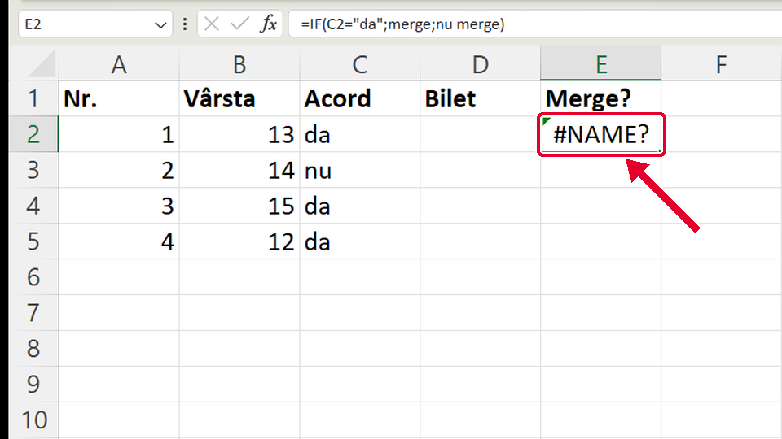
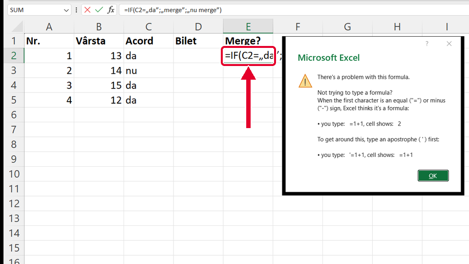

Început
Funcția IF cu text: ghilimelele drepte
Taste: Spațiu = pauză / continuă · ← și → = pasul anterior / următor · cu Tab ajungi la „Rulează singur”; acolo Spațiu îl pornește sau îl oprește. Poți apăsa și pe film.

Legat de asta
Se deschid într-o filă nouă, ca să nu pierzi filmul de aici.
- ÎnainteFuncția IF: o decizie într-o celulă ↗
IF cu numere: condiția, ce arată celula dacă e adevărată și ce arată altfel.
- ÎnainteMedia cu funcția AVERAGE ↗
Altă funcție scrisă de tine: media notelor cu AVERAGE. Și acolo, pe alte calculatoare, pui virgulă în loc de ;.
Dacă nu-ți iese
Alege ce vezi pe ecran.
În celulă apare #NAME? (eroare de nume).

De ce: Cuvintele merge și nu merge sunt scrise fără ghilimele. Fără ghilimele, Excel crede că sunt numele unor zone și nu le găsește.
Ce faci:
- Dai clic pe celulă și te uiți în bara de formule.
- Pui fiecare text între ghilimele drepte: =IF(C2="da";"merge";"nu merge").
- Apeși Enter.
Taste: Enter
Apeși Enter și apare o fereastră care începe cu „There's a problem with this formula.” (în Office-ul românesc, mesajul e în română).

De ce: Ai folosit ghilimelele românești „ ”. În formule, Excel primește doar ghilimelele drepte ", cele de pe tastatura englezească.
Ce faci:
- Apeși OK (sau Esc) ca să închizi fereastra.
- Ștergi ghilimelele „ ” și scrii în locul lor ghilimele drepte: =IF(C2="da";"merge";"nu merge").
- Apeși Enter.
Taste: Esc · Enter
Apeși Enter și apare o fereastră care începe cu „There's a problem with this formula.” (în Office-ul românesc, mesajul apare în română).
De ce: Între părțile funcției ai pus virgulă, dar Excel-ul tău le desparte cu punct și virgulă (;). Pe calculatoarele cu setări românești virgula înseamnă zecimale (4,5), așa că Excel nu înțelege formula. Pe calculatoarele cu setări în engleză e invers: acolo se pune virgulă, iar ; dă eroare.
Ce faci:
- Apeși OK (sau Esc) ca să închizi fereastra.
- În formulă, pui ; în loc de , între părți: =IF(C2="da";"merge";"nu merge"). Dacă ai pățit invers (ai scris ; și Excel-ul tău cere ,), pui virgulă: =IF(C2="da","merge","nu merge").
- Apeși Enter.
- Ca să afli ce cere Excel-ul tău, uită-te la indicația care apare sub celulă când scrii =IF( : după prima parte vezi ; sau , (în Office-ul în engleză: logical_test; sau logical_test,).
Taste: Esc · Enter